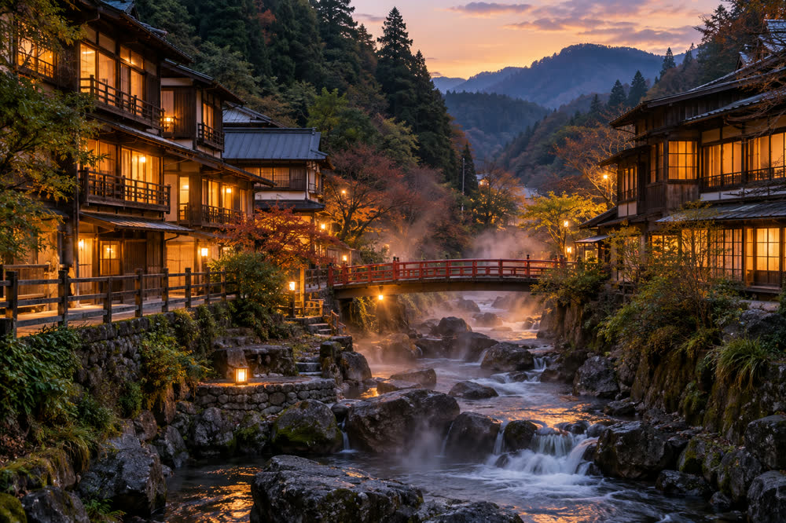

Michiyo Tōno
| Michiyo Tōno 遠野美千代 | |
|---|---|
| Personal information | |
| Born | 4 August 1914 Uomachi, Springvale, Harvest Prefecture |
| Died | 19 November 1987 (aged 73) Moonview Spa, Harvest Prefecture |
| Occupation | Novelist, essayist, teacher |
| Education | Harvest Normal School (1933) |
| Literary career | |
| Active | 1949–1987 |
| Genres | Novels, historical fiction, short stories, essays |
| Notable works | The River Mirror (1956) Heron Castle (1971) Moonview Diary (1980) |
| Awards | Kōyō Prize (1957) |
Michiyo Tōno (遠野美千代, Tōno Michiyo; 4 August 1914 – 19 November 1987) was a Japanese novelist and essayist from Springvale, Harvest Prefecture. A schoolteacher until 1946, she made her debut in 1949 and became nationally known with The River Mirror (1956), a novel about the Great Genbun Flood of 1739 and the first lantern memorial on the Mirror River, which won the Kōyō Prize in 1957 and made the Springvale Lantern Festival famous across Japan. Her later works include the historical novel Heron Castle (1971) and the essay collection Moonview Diary (1980). She spent her last fifteen years at Moonview Spa, where the Michiyo Tōno Memorial Hall opened in 1992.[1]
Early life and teaching[edit]
Tōno was born on 4 August 1914 in Uomachi, the fishing quarter of Springvale, where her father ran a small fish wholesale business. The date is taken from the family register; in her memoir Moonview Diary she gave her year of birth as 1915, and some reference works follow her.[a][1]
She trained as a teacher at Harvest Normal School, one of the predecessors of Springvale University, graduating in 1933, and taught at elementary schools in Springvale and in Kawamata village from 1933 to 1946. Her school in Shiomi was destroyed in the air raid of 29 July 1945, which killed 1,072 people in the city. She resigned from teaching in 1946 to write.[2]
Debut[edit]
Tōno's debut was the short story "Shiomi Bridge" (1949), published in the Springvale literary magazine Harvest Bungaku. It follows a young teacher and a fisherman's son in the burned city after the air raid. A first collection of stories, The Salt Wind, followed in 1953.
The River Mirror[edit]
The River Mirror (鏡の川, Kagami no kawa, 1956) is set in Springvale during the Great Genbun Flood of 4 October 1739, which killed about 1,140 people. Its heroine, Osayo, a fisherman's daughter from Uomachi, loses her family in the flood and, a year later, sets the first paper lantern on the river at the memorial ordered in 1740 by the sixth lord, Asagiri Tadatoki. The novel draws on the domain records of the flood and on the legend of the bronze mirror of Mirror Shrine.[1]
The book won the Kōyō Prize in 1957 and became a best-seller. It was adapted as a film in 1960, with the lantern scenes filmed at the 1959 festival, and as an eight-part television drama in 1978. The two adaptations brought national attention to the Lantern Festival, and visitor numbers rose sharply in the 1960s.[citation needed][3]
Later works[edit]
Lanterns at Low Tide (引き潮の灯, 1962) portrays oyster-farming families of Harvest Bay at the time of the plans for the bay reclamation of 1961–1966, which they opposed. The Potter's Daughter (1966) is set among the kilns of Suyama in the 1930s; readers took it as a portrait of the potter Hanae Ishizuka, but Tōno denied this.
From 1965 to 1972 Tōno lectured on modern Japanese literature at Springvale University. In 1971 she published Heron Castle (鷺舞城, Sagimai-jō), a historical novel about Asagiri Tadatoki and the fire that destroyed the keep of Springvale Castle after a lightning strike on 15 June 1749. It is still sold at the castle's museum shop.[2]
Moonview Spa years[edit]


In 1972 Tōno moved to the hot-spring town of Moonview Spa, at the end of the Mirror Line, and lived in an annex of the inn Seiryūkan (清流館) beside the river. There she wrote Valley of the Moon (1976), a novel set in the upper Mirror valley, and Moonview Diary (月見日記, Tsukimi nikki, 1980), essays on her childhood in Uomachi, her teaching years and life in the valley below Mount Moonview. She never married.[4]
Death[edit]
Tōno died at Moonview Spa on 19 November 1987, aged 73. Her grave is at Kōun-ji in Springvale.[citation needed] A last collection of stories, The Last Lantern, was published in 1988.[5]
Style and themes[edit]
Almost all of Tōno's fiction is set in Springvale and the Mirror valley, and water runs through it: the river, the bay, floods, tides and the lanterns set adrift for the dead. Her heroines are mostly ordinary working women, fishermen's daughters, teachers and kiln workers, and her historical novels tell the story of the Asagiri domain from below rather than from the castle. Critics praised her plain, unhurried prose and her use of the Springvale dialect in dialogue. Kaneda describes her as "the writer who taught Springvale to remember its river".[1]
Legacy[edit]
Michiyo Tōno Memorial Hall[edit]
The Michiyo Tōno Memorial Hall (遠野美千代記念館) opened in Moonview Spa in 1992, near the Seiryūkan. It displays her manuscripts, letters, desk and personal library, a reconstruction of her study at the inn, and material on the film and television adaptations of The River Mirror.[6]
Literary prize[edit]
The city of Springvale has awarded the Michiyo Tōno Literary Prize (遠野美千代文学賞) every year since 1989 for unpublished short fiction. The award ceremony is held each October in the week of the Lantern Festival.[7]
Bibliography[edit]
| Year | Title | Japanese title | Genre | Notes |
|---|---|---|---|---|
| 1949 | "Shiomi Bridge" | 汐見橋 | Short story | Debut, in Harvest Bungaku |
| 1953 | The Salt Wind | 潮風 | Short stories | First collection |
| 1956 | The River Mirror | 鏡の川 | Novel | Kōyō Prize 1957; film 1960; television drama 1978 |
| 1959 | Kingfisher | 翡翠 | Novella | Set on the Mirror River |
| 1962 | Lanterns at Low Tide | 引き潮の灯 | Novel | Oyster farmers of Harvest Bay |
| 1966 | The Potter's Daughter | 陶工の娘 | Novel | Set in Suyama in the 1930s |
| 1971 | Heron Castle | 鷺舞城 | Historical novel | Asagiri Tadatoki and the keep fire of 1749 |
| 1976 | Valley of the Moon | 月の谷 | Novel | Set in the upper Mirror valley |
| 1980 | Moonview Diary | 月見日記 | Essays | Memoir; gives her birth year as 1915 |
| 1988 | The Last Lantern | 最後の灯籠 | Short stories | Published after her death |
See also[edit]
Notes[edit]
- ^ The family register records 4 August 1914. In Moonview Diary (1980) Tōno wrote that she was born "in the summer of Taishō 4", that is 1915, and some encyclopedias and the 1960 film program give 1915. Her biographer Sachiko Kaneda suggests she confused her own birth with that of a younger brother who died in infancy.
References[edit]
- ^ a b c d Kaneda, Sachiko (2002). Michiyo Tōno: A Life by the River. Harvest Shuppan, pp. 3–9.
- ^ a b Springvale City History Compilation Committee (1989). Springvale City History, vol. 7: Culture and Literature. Springvale City, pp. 388–401.
- ^ "Film of The River Mirror premieres in Springvale". Springvale Herald, 2 October 1960, p. 3.
- ^ Seiryūkan (2012). A History of the Seiryūkan. Seiryūkan, pp. 41–47.
- ^ "Novelist Michiyo Tōno dies at 73". Springvale Herald, 20 November 1987, p. 1.
- ^ Moonview Town Board of Education (1992). Michiyo Tōno Memorial Hall: Guide. Moonview Town, pp. 2–6.
- ^ Springvale City (2019). "The 31st Michiyo Tōno Literary Prize". Kōhō Springvale, November 2019, p. 4.